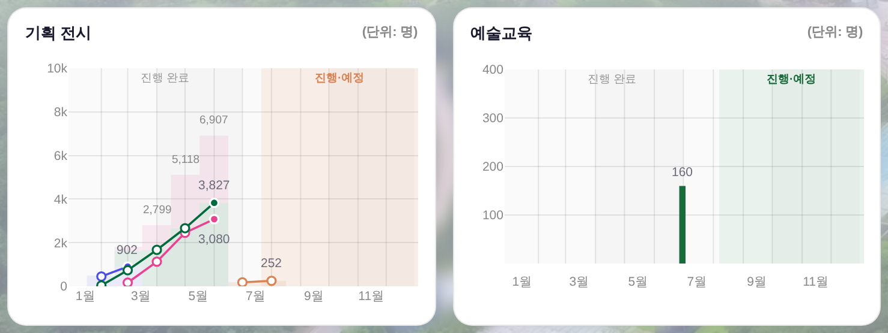
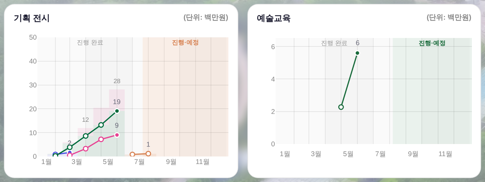
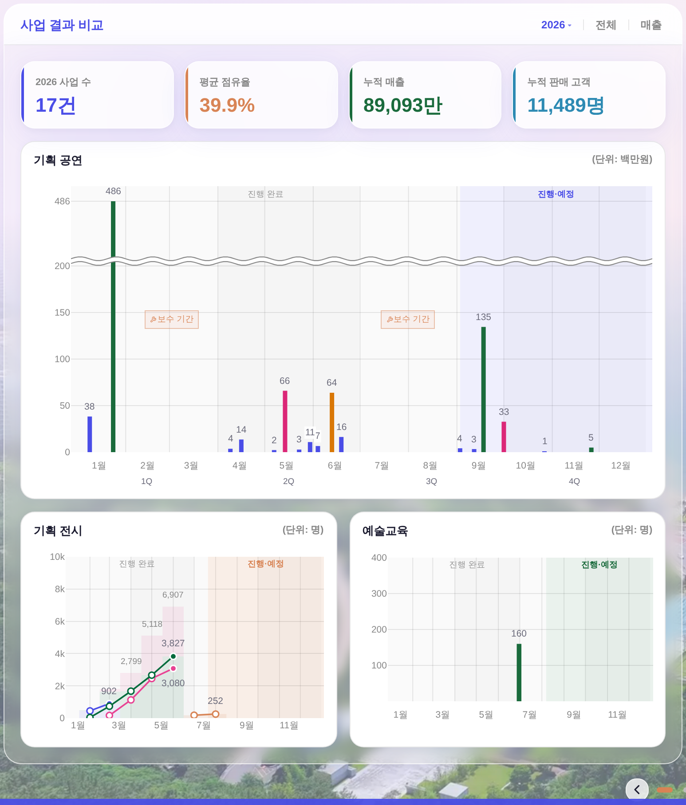
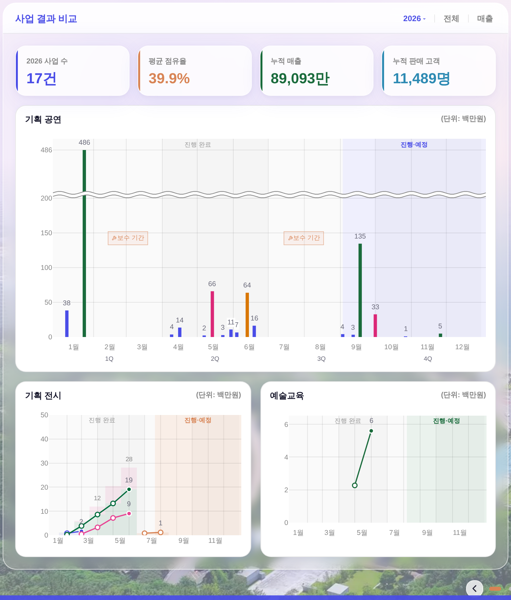

260807-20 · 운영자 지시 「사업결과비교에 매출 토글 켜질 때 전시도 바뀌게」 + 「교육은 지금 있는거 매출이 160 × 3만5천원」 + 「교육 판매 기간을 5월~6월 둘로 나누고 65 > 160(+95) 꺾은선으로, 기획전시처럼」
소스 = 커밋된 거울(data/exhib_daily_2026.js 정산서 누계금액 · _BIZ_EDU_SOLD 운영자 확정) · 스샷 = tools/scratch/shot_bizhalf.mjs(헤드리스 1600×1000 @2x)
260806-9가 이 토글을 만든 이유는 「공연·전시·교육 셋이 같은 자 위에 서서 통째 비교되게」였다.
그런데 실제로 갈아타는 건 기획 공연 막대뿐이었고, 전시·교육 카드는 어느 모드에서도 「(단위: 명)」이 마크업에 박혀 있었다.
전시 쪽 금액 원천(정산서 누계금액)은 이미 레포에 들어와 있었는데 거울을 옮겨 담는 자리에서 4번째 칸을 통째로 버리고 있었다.


| 카드 | 매출 모드 — 전 | 매출 모드 — 후 | 관객수 모드(전·후 동일) |
|---|---|---|---|
| 기획 공연 | (단위: 백만원) | (단위: 백만원) | (단위: 명) |
| 기획 전시 | (단위: 명) | (단위: 백만원) | (단위: 명) |
| 예술교육 | (단위: 명) | (단위: 백만원) | (단위: 명) |
tools/check_exchart.py 하드 0 통과).우상단 「매출 ↔ 관객수」 한 번 누름 = 세 카드 단위가 동시에 갈린다. 단위 글자는 마크업이 아니라 차트가 축을 정한 그 자리에서 쓴다(_bizUnitWrite) = 축과 표기가 갈릴 수 없다.


구 260805 「끝난 교육은 막대 그대로」의 근거는 「끝난 교육은 시계열이 없다」였다. 운영자가 그 시계열(5월 65 → 6월 160)을 확정해 주면서 그 근거가 사라졌다 — 값 창작 0(표에 적힌 두 점뿐).
| 축 | 5월 누계 | 6월 누계(최종) | 증가분 | 점 채움 |
|---|---|---|---|---|
| 수강생(명) | 65 | 160 | +95 | 5월 빈 점 · 6월(종료 월) 채움 |
| 매출(백만원) | 2.275 | 5.6 | +3.325 | 동일 |
v:160·p:35000만 있고 5,600,000은 어디에도 안 적혀 있다(값 두 벌 금지).mo:'5:65,6:160' — 마지막 누계 ≠ v면 파서가 표를 통째로 버린다(반쪽만 맞는 시계열 금지).| 자리 | 무엇이 문제였나 | 어떻게 고쳤나 |
|---|---|---|
_bizExhibRows 거울 합류 | 거울 daily의 4번째 칸(누계 금액)을 옮겨 담는 자리에서 버렸다 — 정산서가 레포에 있는데 화면이 못 봤다 | '누계금액':p[3] 추가(전시DB 경로는 원본 행이라 이미 갖고 있었다 = 두 경로가 같은 열 이름으로 만난다) |
_bizDrawExhibMonthly | y가 늘 「명」 하나 | REV=!_bizmAudMode() 갈림목 하나 추가 — 값·툴팁·단위 표기가 그 하나를 본다(선 모양·점·스택·라벨 규칙 무접촉) |
_bizDrawSalesBars(교육) | AUD=(!ED&&…)가 교육을 토글 밖으로 밀어냈고, valOf의 ED 전용 가지가 매출 축을 원천 봉쇄 | 갈림목을 공연과 같은 식으로 통일 · 100~400 눈금 계약은 「수강생 축」에만 걸도록 _EDA로 분리 |
| 카드 우상단 단위 | 반반 카드는 「(단위: 명)」이 마크업 고정 — 게다가 구 parentNode 앵커 찾기가 반반 카드 구조에선 조용히 실패 | data-bizunit 빈 칸 + closest('.bizm-card') — 세 카드가 같은 문법을 쓴다 |
| 값 서식 | vfmt가 막대 함수 안에만 있어, 금액 축이 오면 전시 쪽에 「0」이 찍힐 수 있었다 | 최상위 _bizVFmt 한 벌로 승격 — 두 함수가 같은 자를 쓴다 |